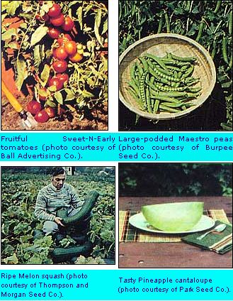

Once again, our man in Kentucky garden-tests the new introductions and offers us...
The summer of 1980 provided nearly perfect growing conditions here in Betsy Layne, deep in the Appalachian Valley of eastern Kentucky ... and I was able to test an abundance of exciting new vegetable varieties for 1981. As you may remember from last year's report (MOTHER NO. 61, page 36 ... see page 148 for information on ordering back issues), the summer of 1979 wasn't especially conducive to gardening, at least not in my area. The cold, damp weather made it almost impossible to grow many such warmth-loving crops as tomatoes, peppers, and melons. Well, mercy, did 1979's "failures" ever prosper in 1980!
Things started to look up in the early spring when we had a spell of fine, settled weather. I eagerly tilled the still-chilly earth so that cool-season crops could get an early start. Peas are usually the first vegetables to go into my spring garden. And, while I didn't find an outstanding variety of snow peas this season-such as last year's Sugar Snap-there are a couple that deserve mention. Johnny's Selected Seeds offers Snowbiz, a tasty "eat-it-all" variety that grows on tall, rangy vines (which need support). In addition, Norli-sold by William Dam Seeds-isn't new, but it's practically unknown ... and bears heavy crops of succulent pods on plants about a foot high.
Without a doubt, the finest conventional pea available this year is Maestro, the superb new legume from Burpee. The plant is just about immune to powdery mildew, and resistant to most other diseases as well ... and the compact vines are tremendously productive. Maestro pods are very large-they contain up to 12 peas!-and the quality is so good that my children love to eat the green nuggets raw from the garden. Other noteworthy peas for 1981 include Knight (from Harris Seeds), and Frostbite... a tough, disease-resistant variety from Gurney.
Around these parts, lettuce is started about the same time as peas, and the most notable variety that I tested was Deepred (Harris). The lovely red-tipped bunches of this "looseleaf" are tender and sweet ... and they stay that way well into summer. Montello, sold by the Jung Seed Company, is similar to Deepred in flavor and heat tolerance. Park's choice new looseleaf cultivar-it's appropriately named Crispy Sweet-also has a fine taste, and resists becoming bitter in hot weather. Folks who prefer heading types should also try Vesey Seeds' Queen Crown ... which will form solid two-pound heads almost anywhere, and exhibits superb quality.
Cabbage is another crop that prospers in cold weather. As usual, there are a number of fine new cultivate available. Savoy Ace-the 1977 All-America gold medal winner-has helped make the crinkled-leaf varieties popular ... and this type does have a taste that's somewhat different (and often better) than that of more common cabbages. I found Savoy Emperor, brand-new from Abbott & Cobb, to be as delicious as it is beautiful. The Emperor is larger than Savoy Ace, and does particularly well when planted later in the season for a fall harvest. Another excellent "Savoy" variety is Novum, which is available from William Dam Seeds.
Among the smooth -leaved cabbages, I found Blueboy-a fine new introduction from Otis S. Twilley-to be excellent. This main-season variety is nearly perfect in all respects: quality, disease-resistance, and productiveness! Johnny's offers Primax, which produces heads that average a little larger than those of Blueboy, exhibits a bright green color, and is of very good quality.
Vela (Unwin), Widi (Johnny's), and Baby Head (Henry Field) are three of the best small early cabbages to come along in quite some time. Each weighs in at only a pound or so ... but they're all perfect for both cooking and slaw. Within about two months after setting out plants, you can be harvesting good crops of each of these three tender, tasty varieties.
Of course, the cabbage family isn't limited to "Irish basketballs" alone. Broccoli, for example, is among the most popular of the cole crops. This year, Burpee has introduced Green Goliath, a giant broccoli that combines size with fine eating quality. Cauliflower, too, is closely related to its green cousin, and Twilley's White Contessa-one of the most outstanding introductions for 1981-leads the field. The quality of this heat-tolerant variety is equal to that of any cauliflower on the market (try it smothered in a cheese sauce!), and the plants grow with exceptional vigor.
Just about every gardener loves-and grows-tomatoes, and 1981 offers lots of good news for fans of the red fruit. The George Ball Seed Company brings us Sweet-N-Early, a newcomer which should prove to be strong competition for Better Boy and Early Girl in the "super tomato" class. Plant Sweet-N-Early, give it loving care, and stand back in awe as the plants cover themselves with huge quantities of three-to four-ounce fruits in 60 days. You can't do better for plain good eating ... so look for this seed at your garden center. Another tomato that performed exceptionally well in my trials was Red Chief VFN, from Hastings. This staking variety sets large numbers of delicious 10- to 12-ounce fruits over an extended season. I also favored Agway's Roadside Red, which-like Red Chief-matures in about 80 days and produces an abundance of large, flavorful tomatoes on big, sturdy plants.
Many gardeners prefer the milder flavor of pink tomatoes, and-among those varieties-Park's Pink Beauty Number 14 is a sure winner. It produces huge fruits (one to two pounds each!) on rugged plants ... and the harvest continues right up to the first frost. Other interesting new tomatoes for 1981 are the easy-to-peel Basket Vee and the pink-fruited Olympic, both from Stokes ... Early Temptation (just great for growing in containers) from Vesey ... and Hastings' Hasty Boy, the largest highquality early tomato ever developed. For juice fans, Stokes offers Veeroma, one of the very few disease-resistant canning types. And, if you like yellow tomatoes, try Moonglow from Gleckers. You'll be rewarded with lots of eight-to ten-ounce fruits of surprisingly good quality ... in fact, they're far superior to the old standard, Jubilee.
Folks used to shy away from peppers because of problems with fruit set, but the new varieties on the market seem to have overcome that difficulty. I particularly liked Burpee's Tasty Hybrid, which has come to rival Bell Boy-my old favorite-for the title of "King Pepper". If you live in an area with a short growing season, look into Early Canada Bell from Stokes ... and the same company's Italian roasting type, Super Shepherd. Both mature quantities of tasty fruit within about 65 days after the plants are set out.
Henry Field sells the most unusual pepper this year. It's called Big Bertha, and the name is well-chosen: Each plant bears several giant eight-inch fruits ... and that's twice the normal size of sweet peppers! Big Stutter, from Herbst, is a similar "giant economy" variety. Among the other notable introductions, I was pleased with Lady Bell (Harris), Delray (Abbott & Cobb), and Grower's Big Pack (Twilley).
Eggplant is enjoying a well-deserved popularity these days, and the gardener can do no better than Imperial. This long, shiny variety-reared by the Petoseed wholesalers-is best when picked before it is fully mature. Satin Beauty, from George Ball, is another lavender lovely. You can obtain seed for both varieties from many garden supply stores.
I'd hate to have to decide between tomatoes and corn in my garden ... both are so darned good that I know I wouldn't be able to choose. Fortunately, I've got plenty of room in my growing ground, and I was able to raise bumper crops of both favorites last year. One variety of corn stood head and shoulders above the rest in my trials: Atlantic, which is offered through garden centers by the Niagara Seed Operation of Moran Seeds. Atlantic sweet corn exhibits every quality home gardeners look for: terrific taste, vigorous plants, and large ears. Make sure that you give this main-season variety (85 days) a try ... you'll be delighted that you did! Two good early main-season introductions (75 days) are Seneca Warrior from Letherman, and Bellringer, from Harris ... both of which approach Atlantic in quality. Tendertreat (Wyatt-Quarles) is a good choice for gardeners in hot, humid climes.
Of course, many people like to grow an early corn so that they can begin to savor the tender kernels long before the big fellows like Atlantic are ready for the pot. Such folks will be glad to know that Gurney offers a quick-producing sweet corn called Mini-Max, which yields five- to six-inch ears-of excellent quality-on diminutive plants. Unwin's Kelvedon Sweetheart is also fully the equal of any other early variety, and Seedway's Early Sumay is very large (and very tasty).
Other yellow hybrids worth checking into are Tri-Gold (Stokes) ... Kandy Korn EH (widely available) ... Supergold (Willhite) ... and Florida Staysgreen EH (Abbott & Cobb), And among the white-kerneled varieties-which have increased in popularity each year, following the great success of Silver Queen-are Herbst's Silver Dollar, Abbott & Cobb's Lightning, and Meyer's Platinum Lady. Sweet Sal (Harris) and BiLightning (Seedway) should be popular among those who can't make up their minds. Each has some white kernels ... and some yellow, too.
Thanks to the dismal weather, my 1979 trials didn't turn up a single commendable melon. But last summer-with sufficient rain and lots of sunny days-the round fruits really flourished! And none of them did better than Herbst's Sweety Pie, which had delicious flavor and a rich aroma that perfumed the entire garden. It looks like Burpee's famous Ambrosia finally has a worthy competitor! Sundae (also from Herbst) tastes just about as good as Sweety Pie and has larger fruit ... but the plants are not nearly so productive. Folks who are looking for a quick -fruiting variety should try Harris's Early Dawn. The melons are elongated, dark golden in color, tender, sweet, and aromatic.
Probably the most unusual cantaloupe for 1981 is Pineapple, from Park Seeds ... a melon that looks like a 'loupe but tastes like a honeydew! Burpee's Venus is a honeydew through and through, but it reaches maturity in an amazingly short 90 days. Among the nonhybrid cantaloupes, I found Burrell's Mainstream and Willhite's Perfecto to be of especially high quality.
On the watermelon front, Gurney's Pineapple (yes, I know it's confusing!) is a delicious fruit with vivid yellow flesh (see, there is an explanation for the name). I rate this six- to eight-pound melon a best bet for 1981.
Everybody loves cukes, and Agway's Roadside Fancy is about as good as cucumbers get. The same could be said of Herbst's Sugar Slice B ... a "burpless" type with a sweet, nutty taste. Two choice new compact "bush" slicers are Streamliner (Burpee) and Bush Whopper (Park). They're both tops for small gardens or container growing. I'm always glad to see a good new pickling variety, too, and I found three premium preservers for 1981: Conde (Unwin), County Fair (Stokes), and Explorer (Willhite).
Squash provides more food for less effort than any other vegetable I know... and the 1981 trial winners were especially productive. I liked Gold Rush, the All-America yellow zucchini ... Harris's Golden Girl, another fine yellow variety ... Market King, bred by Keystone and available at many garden centers ... and Agway's Milano, a fine green zucchini.
The winter squash that performed best for me is called, strangely enough, Melon squash. The flavor of the raw fruit does somewhat resemble that of a cantaloupe, but it's when the squash is cooked that the gloriously sweet taste really comes through. And it won't take many of these three-foot, 20-to 30-pound fruits to last your family all winter. [EDITOR'S NOTE: Thompson & Morgan had such a small quantity of seed available this year that they were forced to drop Melon squash from their catalog. As a special favor to MOTHER's readers, however, the company will make up special packets while their small supply of the winter squash seeds remains. Request "Melon Squash", and send $2.50 (postpaid) to Thompson & Morgan, Box 100, Farmingdale, New Jersey 07727.]
Well, you're probably just about out of garden space by now, but I've got a few final recommendations for plants to tuck into those empty corners that always turn up: Park's Candelabra Branching okra ... Darrow strawberries from W.F. Allen, and Sequoia berries from Park ... along with White Seeded Provider bush beans from Twilley, and Seedway's French Horticultural bean.
And, if you don't have room for everything, here's my "must try" list: Sweet-N. Early, Red Chief, and Roadside Red tomatoes ... Sweety Pie and Pineapple cantaloupes... Pineapple watermelon Savory Emperor cabbage ... White Contessa cauliflower ... Roadside Fancy cuke... Maestro peas ... Atlantic sweet corn ... and Melon squash. You'll have a superproductive garden ... and good eating all year round!
EDITOR'S NOTE: Most of the varieties listed in "The Cream of the Crop" will be available through seed and garden stores this spring. It you'd prefer to order by mail, addresses for many firms that market to individuals can be found in "MOM'S 1981 Seed Company 'Wishbook' Guide", MOTHER NO. 67, page 46.
|
 |
|
|